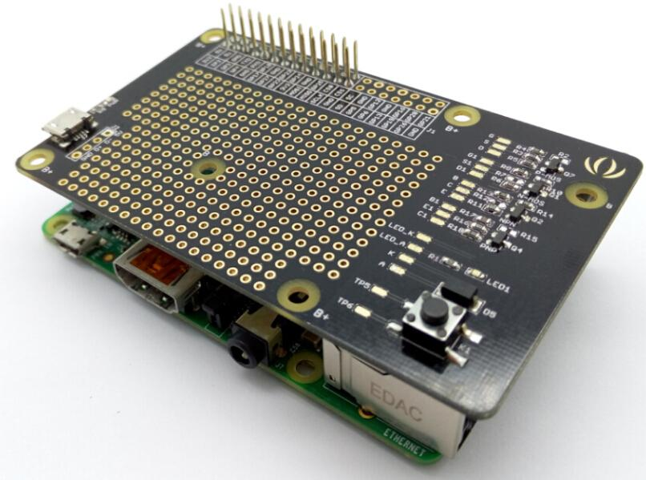
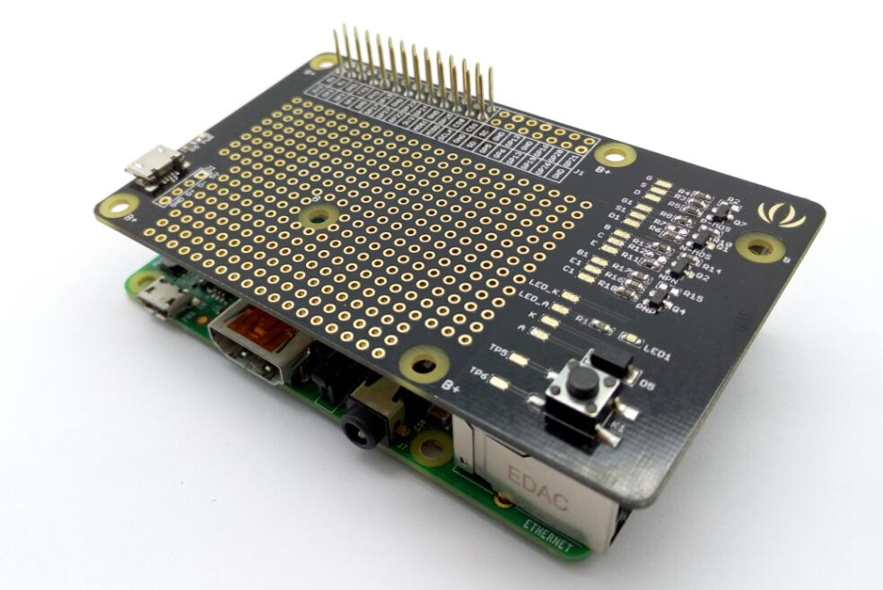

Raspberry Pi Breakout Board v1.0

Raspberry Pi Breakout Board for Raspberry Pi is a prototype board that you can combine your raspberry pi with other components, modules.
As a prototype board, it also provides power ,state indicator light, button and universal transistor,such as NPN,PNP,N-MOS,P-MOS.
Features
- Raspberry pi compatible
- Micro USB power supply
- Basic Circuit : state indicator light, button and universal transistor（NPN,PNP,N-MOS,P-MOS）
- 3.3 volt, 5 volt, and ground power rails are easily available anywhere on the board
Board trace schematic
Assembly
- You can design circuit on the Raspberry Pi Breakout Board,then connected to raspberry pi as shown.

Resources
File:Raspberry Pi Breakout Board v1.0 sch pcb-.zip
Copyright (c) 2008-2016 Seeed Development Limited (
www.seeedstudio.com /
www.seeed.cc)
This static html page was created from http://www.seeedstudio.com/wiki